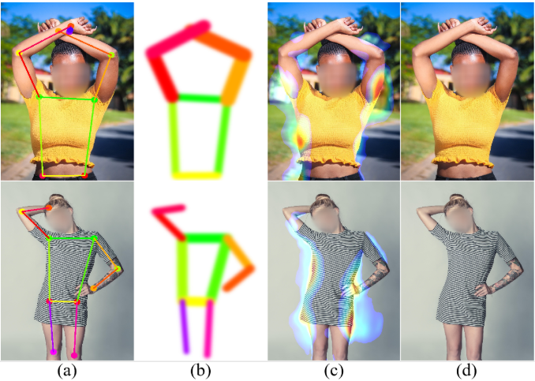
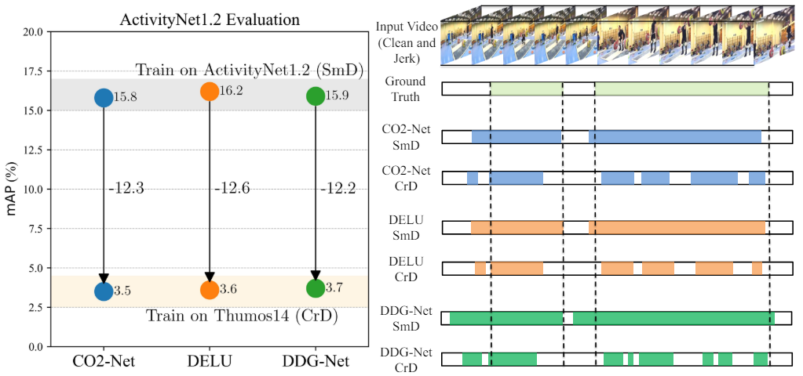
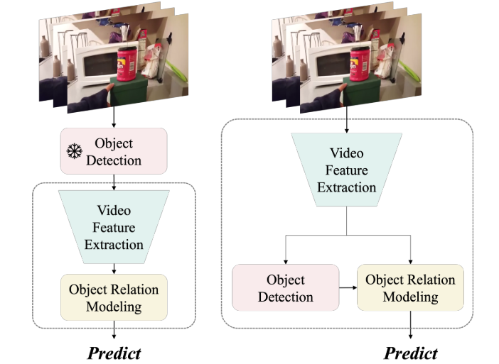

LIU, Yangcen 刘洋岑

|
LIU, Yangcen
|
About Me
I'm currently an undergraduate student at University of Electronic Science and Technology of China from 2020 Fall, a member of DIG@UESTC supervised by Prof. Wen Li.
I will be joining Georgia Institute of Technology for M.S. degree in Robotics from School of Computing.
My current research interests include but are not limited to 1) video processing, and 2) robot learning.
Education
|
University of Electronic Science and Technology of China (UESTC), China Bachelor Degree in Artificial Intelligence. School of Computer Science and Technology. • Sep. 2020 - Jun. 2024Lab: Data Intelligence Group Supervisors: Prof. Wen Li and Prof. Lixin Duan | |
 |
University at Buffalo (SUNY), United States of America Visiting Student Research Program. Computer, Electrical and Mathematical Sciences and Engineering. • Mar. 2023 - Dec. 2023Lab: Visual Computing Lab Supervisor: Prof. Junsong Yuan Collaborated with Prof. Ziyi Liu, Yuanhao Zhai and Prof. David Doermann |
|
Georgia Institute of Technology, United States of America Master Degree in Robotics. School of Computing. • Sep. 2024 - Sep. 2026 |
News
- [April 2024] One paper was submitted to MM 2024.
- [March 2024] One paper was submitted to ECCV 2024.
- [Feburary 2024] One paper was submitted to TMM 2024.
- [April 2023] Became a summer intern of Visual Computing Group, supervised by Prof. Junsong Yuan.
- [April 2022] Became a member of Data Intelligence Group, University of Electronic Science and Technology of China, supervised by Prof. Wen Li.
Publications and Preprints
|  |
Structure-Aware Human Body Reshaping with Adaptive Affinity-Graph Network Assessment |
|  |
STAT: Towards Generalizable Temporal Action Localization. |
|  |
STAT: Towards Generalizable Temporal Action Localization. |
Services
Conference Reviewer:
- ACM-MM 2023
- ACM-MM 2024
Industry
 |
AIGC Algorithm Researcher Intern |
Others
- ENTP-a😂.